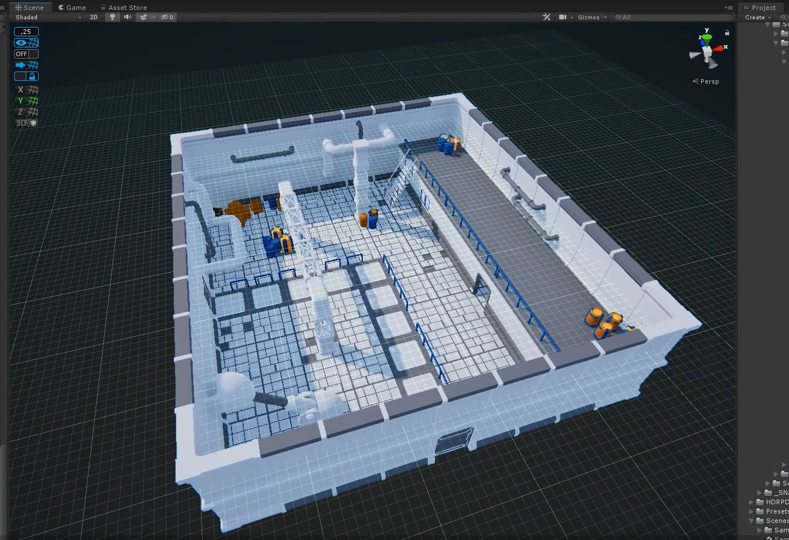
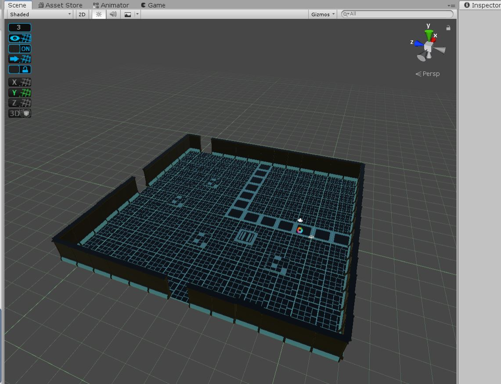

Factory Scene


For this project, I created a Sci-Fi factory scene using Unity. The first image is the final look of the factory, with the next image being the beginning with a focus on the floor. I really wanted to compare my growth in being able to complete a scene in Unity. The second image of the floor was created a while back when I was still relatively new to Unity. I ended up not finishing the piece because I wasn't really as experienced and got stumped easily. But after months of messing around with the UI, I was able to start the journey once again and was finally able to achieve my first complete scene. The objects were imported from "Snaps" in the Asset Store on Unity. From there, I was able to use the imported objects and create the scene. In the final piece, I added objects such as barrels, tubes, stairs, and entrances.
Home